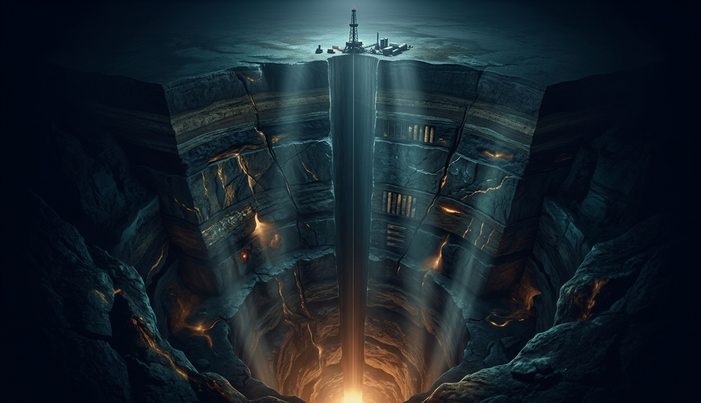
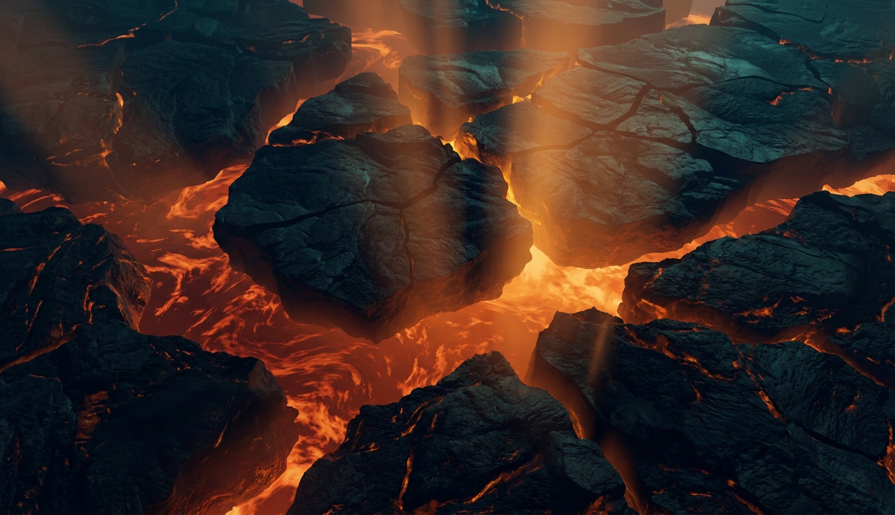
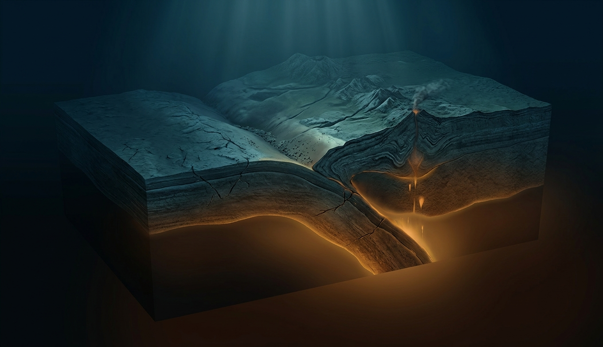
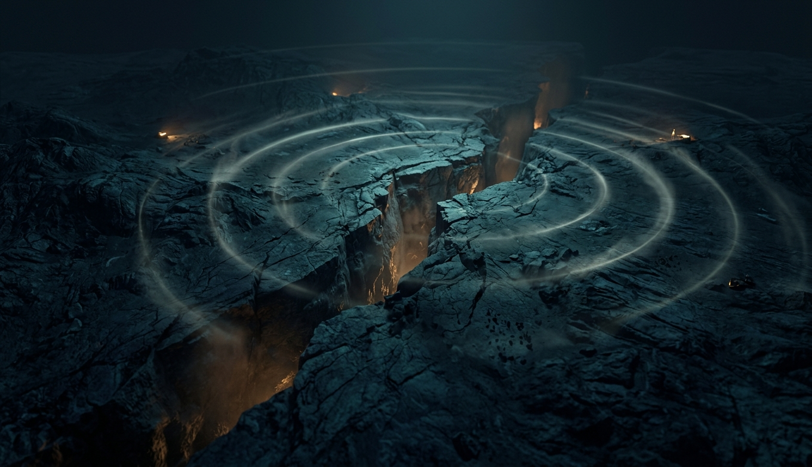
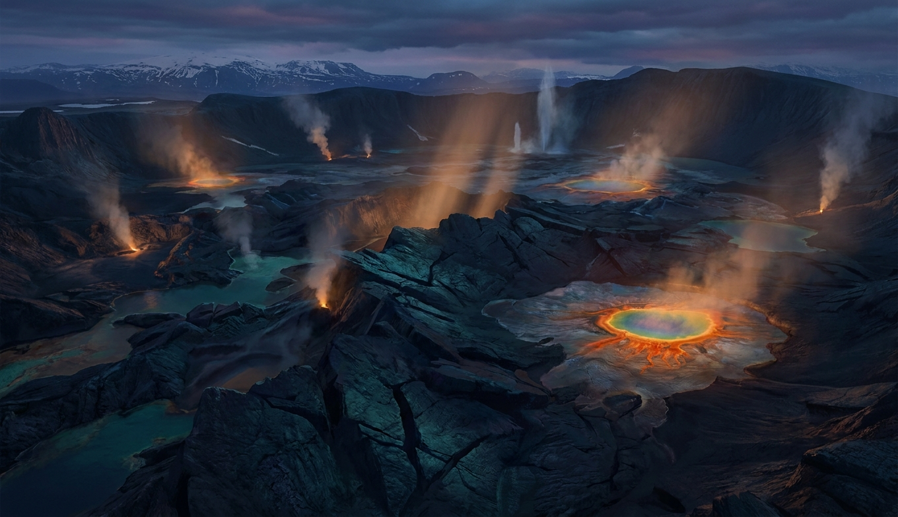
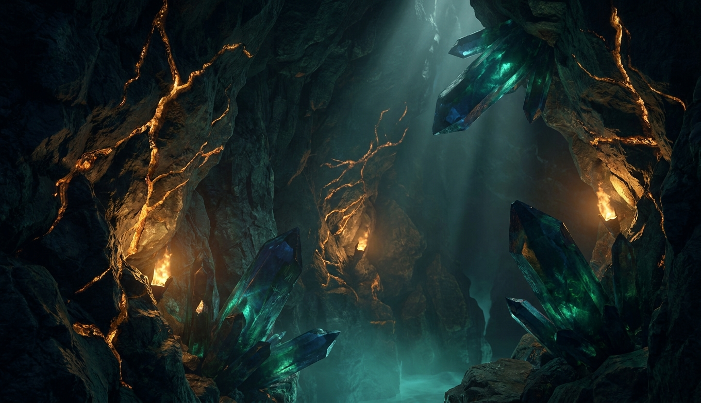
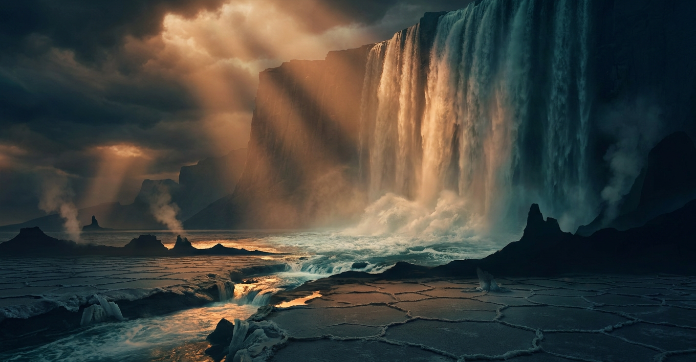
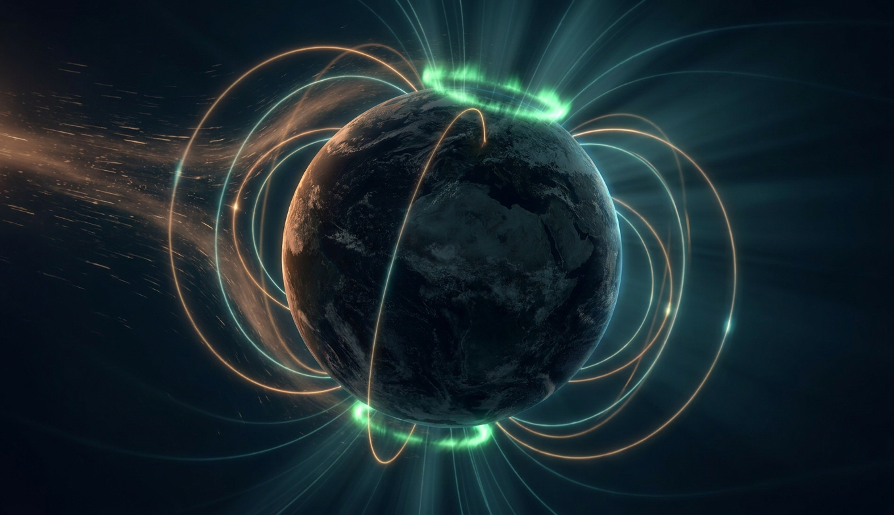
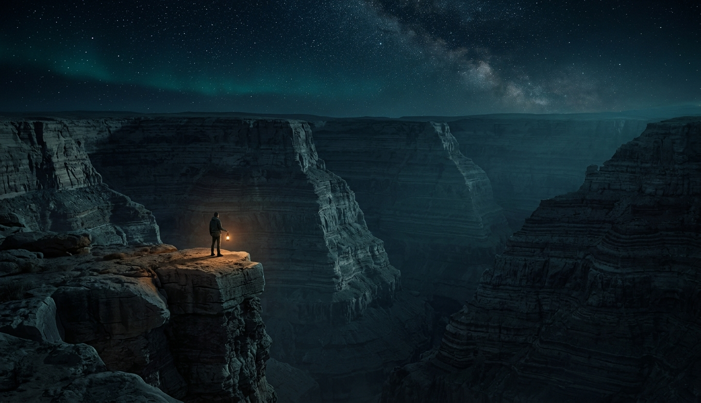

До центра Земли — 6371 километр. Человечество процарапало 12 из них — 0.2% пути. Всё, что глубже, мы знаем не потрогав: планету нам просвечивают землетрясения.

Идею, что материки дрейфуют, полвека считали бредом. Автор умер во льдах Гренландии осмеянным — а потом океанское дно подтвердило каждое его слово.

95% землетрясений, почти все вулканы, самые глубокие впадины и самые высокие горы — всё это швы между плитами. Три типа швов — три разных характера.

Плиты движутся плавно, а границы — рывками: десятилетиями копят упругую энергию и отдают её за секунды. Предсказать нельзя. Пережить — можно.

Планета выдыхает: где-то тихой лавой, где-то взрывом в тысячи мегатонн. Разберём, как устроены вулканы, что на самом деле может Йеллоустон — и почему ядерной боеголовкой его не разбудить.

Где миллиард лет назад прошла магма — там сегодня граница, санкции и биржевые котировки. Самые наглые сюжеты геологии: природный ядерный реактор, шахта, на которой стоят все чипы мира, и новая гонка за камни.

Моря высыхают досуха и возвращаются водопадом высотой в километр. Океан гуляет на сотню метров вверх-вниз, открывая и закрывая мосты между континентами. Всё это — не фантастика, а буквально вчера по геологическим часам.

Три тысячи километров под ногами крутится динамо-машина из жидкого железа. Она рисует полярные сияния, водит стрелку компаса — и время от времени переворачивается вверх ногами.

На вершине Эвереста лежит морское дно с раковинами. В железе твоего ножа — океан, заржавевший от первого кислорода. В кремнии твоего телефона — пегматит, остывавший под Пангеей. Каждый твой вдох — выдох вулканов, а стрелку компаса водит железный шар размером с Плутон, крутящийся в трёх тысячах километров под креслом, в котором ты сидишь.